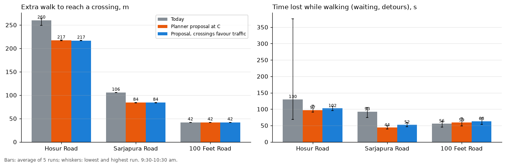
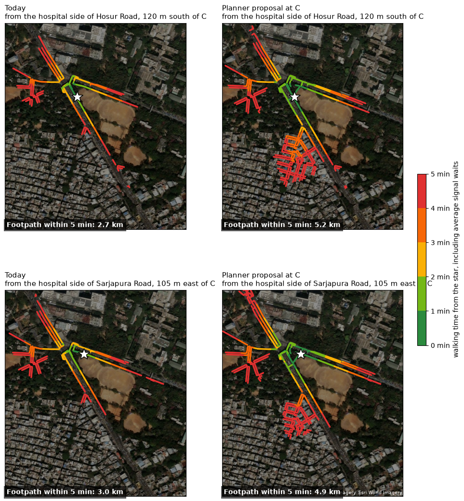
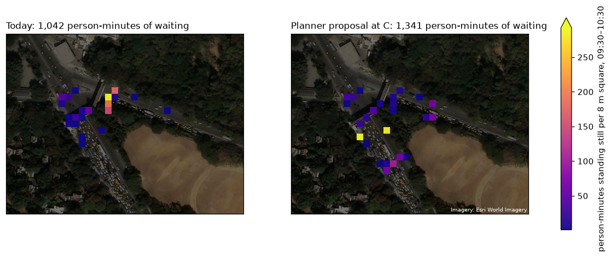

Junction C proposal test
The planner's drawing for junction C (Hosur Road and Sarjapura Road, by St John's), run through the loop's traffic and pedestrian model against today's streets.
The proposal shortens the walk to cross both roads near C: about 40 m less on Hosur Road and 20 m less on Sarjapura Road, where crossing also takes a minute less. On Hosur Road the time gain is small, because people now wait at the new signal instead of walking to C. From the hospital side of either road, the footpath you can reach in five minutes almost doubles. Almost all of this comes from the two new signalised crossings. The vehicle results point the other way but are not calibrated yet.
What was tested
Today's network and traffic, plus the drawing: two new signalised crossings (Sarjapura Road about 105 m from C, Hosur Road about 120 m south of C), a free-left slip road from Sarjapura Road onto Hosur Road towards B, an off-road bus bay and two moved St John's bus stops, wider footpaths, and a new footpath across the corner.

Two variants show what drives the result: the proposal without the new crossings, and the proposal with crossings that favour traffic (vehicles keep the green while traffic keeps coming, 20–90 s, then people get 18 s).
Three people, followed
The same person on the same trip, in both runs at once. Each is typical for their kind of trip: the time saved is the closest to the median.
| Who | Today | Proposal |
|---|---|---|
| Bus passenger at the St John's Hospital stop, crossing Hosur Road | 3:02 | 2:09 |
| Bus passenger at the St John's Hospital stop, crossing Sarjapura Road | 3:26 | 1:24 |
| Someone who cannot use stairs, crossing Hosur Road from the same stop | 2:45 | 1:20 |
Pedestrian results
| Typical run of ten | Today | Proposal | Crossings favour traffic |
|---|---|---|---|
| Hosur Road: extra walk to reach a crossing | 260 m | 217 m | 217 m |
| Hosur Road: time to cross and reach the place | 5.0 min | 4.7 min | 4.8 min |
| Sarjapura Road: extra walk | 106 m | 84 m | 84 m |
| Sarjapura Road: time to cross and reach the place | 3.2 min | 2.2 min | 2.3 min |
| People who cannot use stairs: Hosur Road extra walk | 245 m | 208 m | 206 m |
| People who cannot use stairs: Sarjapura Road time | 3.3 min | 2.3 min | 2.4 min |
| 100 Feet Road: extra walk | 42 m | 42 m | 42 m |
- The new crossings are used heavily: about 930 people an hour on the Hosur Road one and 430 on the Sarjapura Road one. Most of them used to cross at C.
- Hosur Road gains distance more than time: people walk 43 m less but wait at the new signal (18 s of green in a 75 s cycle). Today's Hosur Road is also less predictable: across ten runs it took 4.8 to 9.8 minutes, the proposal 4.6 to 5.0.
- People who cannot use stairs (1 in 10 in the model) gain the same distance. On Sarjapura Road they save a minute; on Hosur Road their time barely changes.
- Without the new crossings the walks are as long as today or slightly longer (Hosur 253 m, Sarjapura 114 m), so the gains come from the crossings. Crowds then build at the foot over bridge stairs at C, which the model exaggerates, so that variant's times are not shown.
- More waiting at signals: in one recorded hour, people spent 1,341 person-minutes standing still near C with the proposal, against 1,042 today. The waiting moves from the foot over bridge stairs to the new crossings.

How far you can walk in five minutes
From the hospital side of each road, where the new crossings land, including the average wait at each signal. From the street network alone. From the hospital side of Hosur Road the footpath within five minutes grows from 2.7 km to 5.2 km; from the hospital side of Sarjapura Road, from 3.0 km to 4.9 km.

Where people cross and where they wait


The whole hour
What to look for
- Today: a stream of people walks up the Hosur Road footpaths to C and bunches at its crossings.
- Proposal: people cross at the two new crossings (yellow dots on the pink bars). The counter at the top shows how many have crossed so far.
- Traffic: queues stand behind the new crossings. The slip road stays empty; see the vehicle section.
- person walking
- person on a crossing
- car
- two-wheeler
- bus
More videos: the whole loop, and two minutes in close-up
Vehicles: direction only
In the model the proposal slows Hosur Road towards C in every run, and vehicle and bus delays rise in most runs. Queues from the two new crossings reach back towards C and A. The slip road carries no traffic even when drivers choose routes from current travel times, because no modelled traffic needs that turn. That reflects missing data, not the design.


Assumptions
Pedestrians (the results above rely on these)
| What | Assumed | Source |
|---|---|---|
| Who crosses | Bus passengers (6 get on or off per bus, half cross), plus people going to hospitals and schools (60 an hour each), temples, parks and amenities (25), side streets (30), and 600 background walks an hour | Our estimate; no counts yet |
| Where they start and end | Within 60 m either side of each place, on the far side of the road | Our estimate |
| Walking speed | 1.2 m/s; foot over bridge stairs 0.5 m/s | Standard values |
| People who cannot use stairs | 1 in 10 (wheelchairs, prams, many older people); they never use foot over bridges and walk at 1.0 m/s | Planning allowance; no local figure |
| Where people cross | Only at crossings and foot over bridges, and only on the green. Crossing on red in gaps is not modelled, because the simulator's ways of allowing it sent people into moving traffic. Detours and waits are an upper bound | Model limit |
| Footpaths | Along every road OpenStreetMap shows; widths guessed | OpenStreetMap |
| Buses | BMTC timetable for the hour; 20 s at each stop | Unofficial timetable feed; stop time assumed |
How the drawing was read
| Drawn | Modelled as |
|---|---|
| Zebra crossings (6) | Signalised, fixed 75 s cycle with 18 s for people. Four sit on C's own arms, which already have crossings, so two are new. |
| New roads (2) | One two-lane free-left slip road from Sarjapura Road onto Hosur Road towards B, at 20 km/h. The sketch stops short of the roads, so it joins the nearest ones; the modelled link is only 8 m long because the two carriageways meet beside C. |
| Zone 1 | Islands closed to traffic. No road runs there today, so nothing changes. |
| Zone 2 | Footpaths widened to 4 m. |
| Zone 3 | Bus stops. The large shape is an off-road bay for the Sarjapura Road stop; the small ones move two St John's stops next to the new crossings. |
| New footpath | A 70 m walkway across the corner. |
Traffic (not relied on)
| What | Assumed | Source |
|---|---|---|
| Vehicle volumes | 12 flows between the loop's entry roads, 200–1,500 vehicles an hour each, plus 400 local trips | Our estimate; one flow borrowed from a count 6 km north |
| Hour | 9:30–10:30 am, but volumes not raised for it | Published counts peak then |
| Vehicle mix | Two-wheelers 45%, cars 30%, autos 13%, the rest vans, goods vehicles and trucks | Indiranagar–Domlur count, April 2025 |
| Signals | A and C adjust green to the queues (8–60 s); B has no signal | A and C assumed; B from official drawings |
| Routes | Each driver picks a route when setting off, from recent travel times; buses keep theirs. Changing route on the way crashes the simulator on this network | Model setting |
| Lanes | From OpenStreetMap, plus two-lane slip roads at B | Map, corrected by us |
Making the model better
- Turning counts at A, B and C for the peak hour, by vehicle type. This settles whether the slip road matters.
- Pedestrian counts at each crossing and where people cross informally, with wait times. This replaces our largest pedestrian estimate.
- How many people cross on red, and when. The simulator cannot yet do this realistically; counts would show how much shorter real detours are.
- Signal timings at A and C, and what actually happens at B.
- Vehicles cleared per green on the busiest approaches, and usable road width.
- Travel times around the loop, three runs each way, to check the model against the street.
- Bus stop times at the St John's stops, and how much of the lane a stopped bus blocks.
- The planner's notes on the drawing: what each zone is, and the crossing type.
- Foot over bridge stair widths, measured on the walk, so crowding there is not exaggerated.
- Raise traffic volumes for 9:30–10:30 once the counts exist.